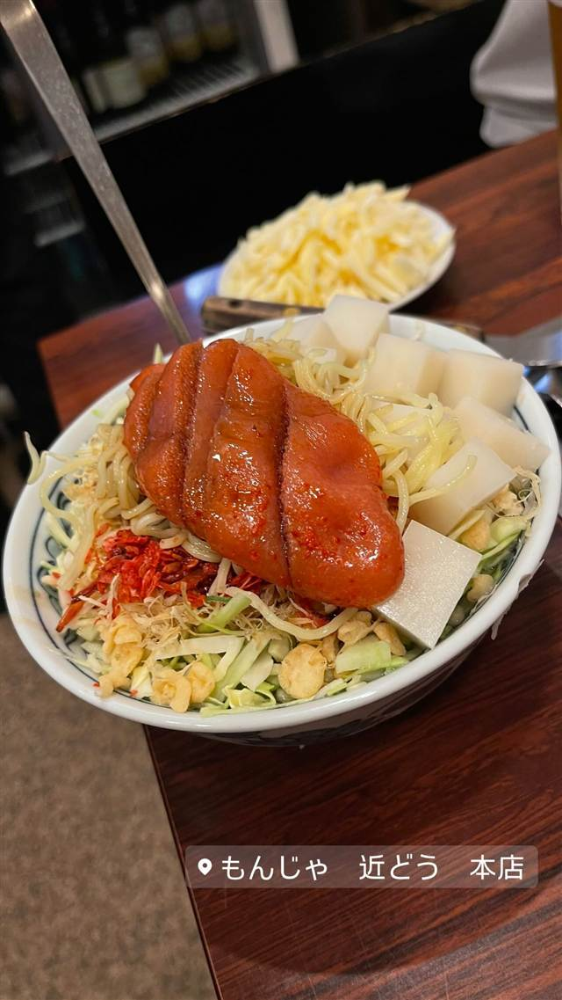

お好み焼き・もんじゃ · 月島
もんじゃ近どう 本店
昭和25年創業、駄菓子屋の一角から始まった老舗もんじゃ
もんじゃ 近どう 本店
昭和25年創業、月島でも屈指の老舗もんじゃ店。戦後に駄菓子屋の一角でもんじゃを焼き始めたのがルーツで、先代女将の味を今も守り続けている。
TRIVIA
豆知識
- 月島最古参のもんじゃ店の一つ
- 元々は駄菓子屋として始まった
REVIEWS
世間の評判
3.49食べログ
出汁の効いたもんじゃと行列の人気
- 計算され尽くした出汁の旨味を評価する声が多い
- スタッフが焼いてくれるサービスや下町の活気ある雰囲気を評価する人が多い
- 飲み放題コースのコストパフォーマンスを評価する声がある
- 開店前から行列ができるほど混雑するという声がある
食べログ 口コミ1110件
| 創業 | 昭和25年（1950年）創業 |
|---|---|
| 系譜 | 戦後、駄菓子屋の一角でもんじゃを焼いていたのが始まり。 |
| 看板 | 特製近どうもんじゃ、明太子もんじゃ |
| こだわり | 開業当初からの配合・味付けを守り続けている。 |
| 掲載・評価 | 月島もんじゃ振興会協同組合加盟の老舗。 |
| どこから | 都心 |
| 行くなら | 行列 |
| 予算 | 夜 ¥2,000～¥2,999 |
| 場所 | 月島 東京都中央区月島 |
| メモ | 週末は行列ができることが多い。店舗は建て替え済みで店内は明るく清潔。 |
食べたもの：もんじゃ明太子